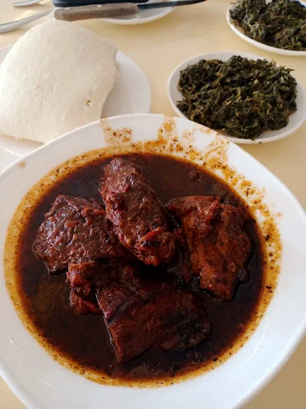
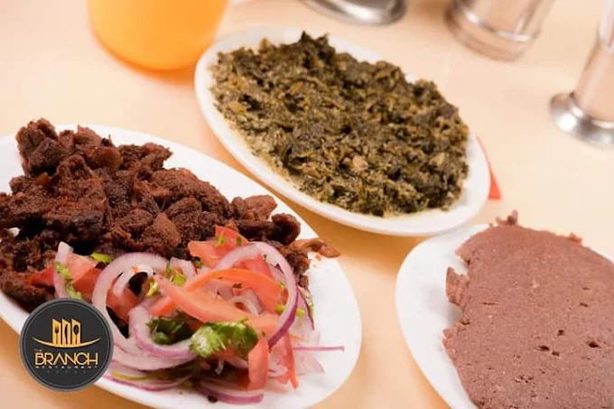
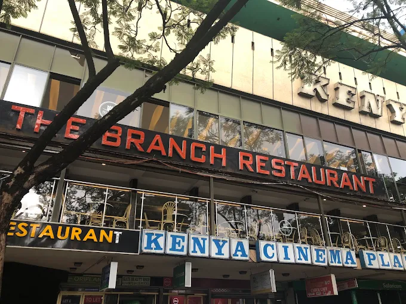
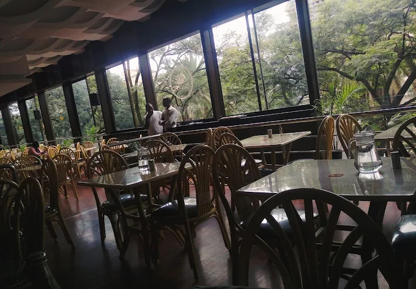
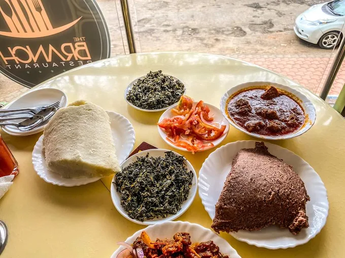
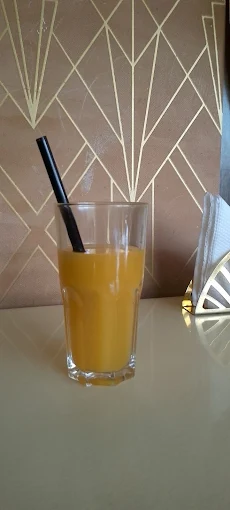
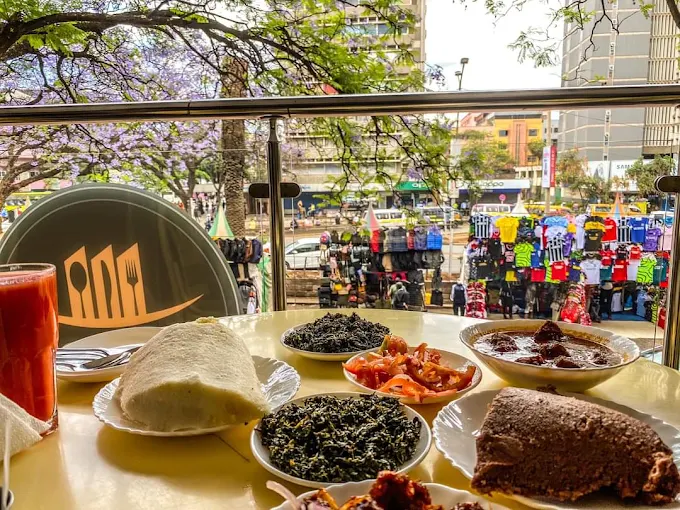
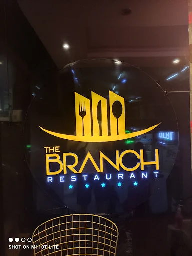

House favourite
Slow-cooked beef stew
Rich tomato gravy, tender beef, ugali and greens.

Nairobi · Kenyan cuisine
Traditional Kenyan favourites, generous portions and a warm city-centre welcome.
The Branch celebrates the meals Kenyans know and love—from slow-cooked stews and nyama choma to ugali and nourishing traditional greens.
Set above the rhythm of Nairobi’s city centre, it is a familiar place for family lunches, catch-ups with friends and satisfying everyday meals.


The Branch experience
Lunch with colleagues, a relaxed family meal or a quick stop in town—the dining room is made for easy conversation and unhurried hospitality.
Made fresh
Ask what is cooking today. Our selection changes with the kitchen.



Always ready to help
Ask about today’s dishes, get directions, check opening hours or request a table—all in one conversation.

Visit us